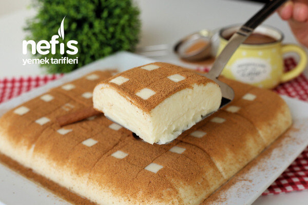

Yalancı Tavuk Göğsü Tarifi

Yalancı Tavuk Göğsü Tarifi İçin Malzemeler
- 125 g tereyağı
(isteğe göre margarin ile de karıştırabilirsiniz)
- 1 su bardağı un
- 1,5 su bardağı şeker
- 1 lt süt
- 1 paket vanilya
Yalancı Tavuk Göğsü Tarifi Nasıl Yapılır?
-
İlk olarak tenceremize tereyağımızı alalım ve kısık ateşte yağımızı eritelim.
-
Yağımız eridikten sonra üzerine unu ilave edelim ve kokusu çıkana kadar yaklaşık 4-5 dakika karıştırarak kavuralım.
-
Unumuzu tel çırpıcı ile karıştırırken bir yandan üzerine sütü ekleyelim. Burada mutlaka ununuzu karıştırmalısınız aksi halde topaklanma olabilir.
-
Üzerine şekeri ilave ederek muhallebimiz kıvam alıp koyulaşana kadar karıştıralım.
-
Koyulaşan muhallebimizi ocaktan alalım, sonrasında vanilya ilave ederek 3-4 dakika mikserle çırpalım.
-
Hazırladığımız muhallebimizi 22 cm boyutlarındaki ıslattığımız borcama dökerek üzerini bir spatula yardımı ile düzeltelim.
Oda sıcaklığına gelmesi için bekletelim.
-
Oda ısısına geldikten sonra üzerini streçleyelim, buzdolabında 2-3 saat dinlendirelim.
-
Dinlenen tatlımızı dolaptan alalım, yanlarına bastırarak havasını çıkartalım ve servis tabağına ters çevirerek çıkartalım.
-
Üzerini arzuya göre tarçın, hindistan cevizi veya file antep fıstığı ile süsleyelim.
Ben pişirme kağıdından ince şeritler kestim, tatlının enine gelecek şekilde üzerine yerleştirdim.
Ardından her yerini kapatacak şekilde üzerine tarçın serptim ve şeritlerimi dikkatli bir şekilde çıkarttım.
-
Sonrasında tekrar kestiğimi pişirme kağıtlarını tatlının boyuna doğru aralıklı olarak yerleştirdim ve tarçın döktükten sonra dikkatlice
çıkarttım ve çok hoş bir görüntü elde ettim. Ancak siz dilediğiniz şekilde süsleyebilirsiniz. Afiyet olsun!